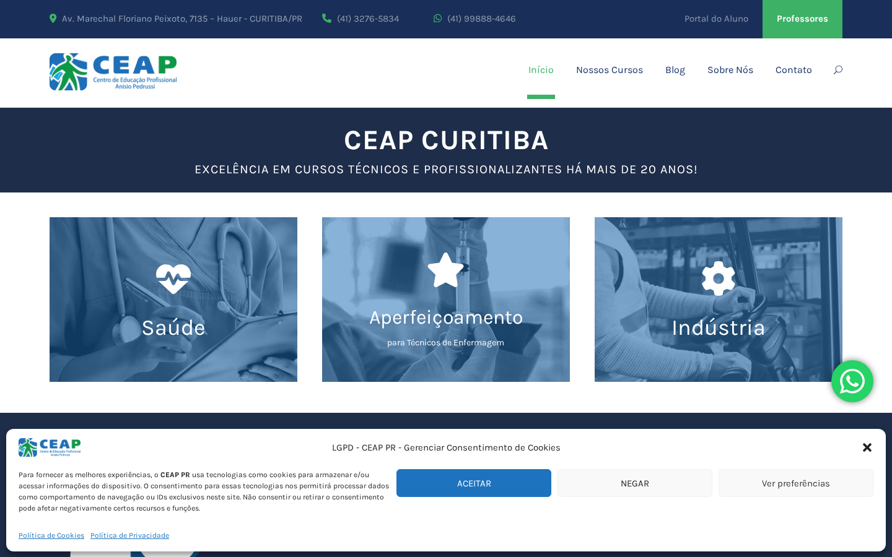
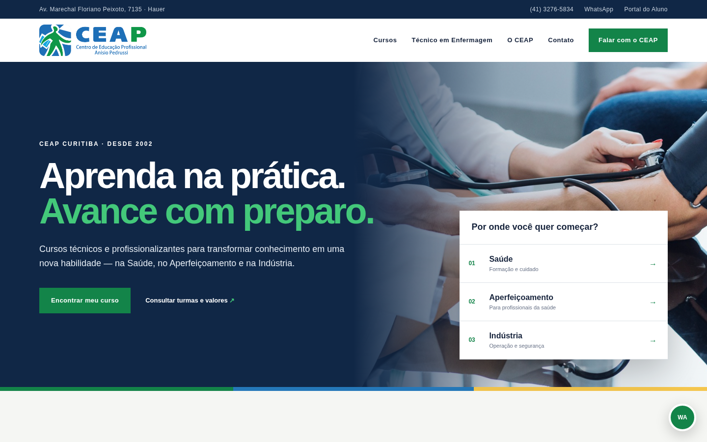

Catálogo que responde à intenção
Filtros por área e informações comparáveis reduzem idas e voltas antes do primeiro contato.
OPORTUNIDADE DIGITAL
Uma direção para transformar o site do CEAP em uma jornada objetiva: descobrir, comparar e conversar com a equipe sobre o curso certo.
HOJE → POSSIBILIDADE
O conceito preserva azul, verde, logotipo, áreas de ensino e linguagem de preparo profissional, reorganizando a experiência em torno da escolha do aluno.


TRÊS MELHORIAS PRIORITÁRIAS
Filtros por área e informações comparáveis reduzem idas e voltas antes do primeiro contato.
CTAs por curso tornam a conversa no WhatsApp mais específica e útil para aluno e atendimento.
Dados duráveis e provas específicas dão segurança sem prometer resultados não verificados.
ESCOPO SUGERIDO
Começar pela jornada de escolha cria uma estrutura que pode crescer com novas turmas, conteúdos e integrações.
Arquitetura, mensagens, inventário de cursos e regras de atualização.
Home, catálogo, padrão de página de curso, contato e estados mobile.
Componentes acessíveis, filtros, formulários e integração de contato.
Eventos de escolha, curso, CTA e origem para orientar melhorias.
SEQUÊNCIA DE TRABALHO
Cursos ativos, valores, turmas, regras e responsáveis.
Conteúdo, catálogo, páginas e mensagens de contato.
Interface, integrações, acessibilidade e mensuração.
Revisão do CEAP, testes e preparação da publicação.
Validação do catálogo e status das turmas · tabela de investimento e política comercial · acesso ao CMS e domínio · regra definitiva de cookies/LGPD · destino dos formulários e CRM · aprovação de imagens, depoimentos e textos.
PRÓXIMO PASSO
Com as informações comerciais e acadêmicas confirmadas, o conceito pode ser convertido em escopo de produção.
Agendar conversaLeitura pública realizada em julho de 2026: home, página “Nossos Cursos”, contato e páginas de Técnico em Enfermagem, Assistente de Farmácia, Socorrista, Coleta de Sangue, Operador de Empilhadeira, Mecânica Básica Industrial e especializações.
Observações técnicas: consentimento cobre conteúdo-chave na primeira tela; rodapé do site atual indica 2024; algumas páginas exibem fragmentos de título; a informação “20 anos” diverge da fundação em 2002. Não foram usados valores, datas de coorte, vagas, taxas de emprego ou resultados não confirmados.
Conceito independente e não solicitado, preparado a partir de informações públicas. Não representa comunicação oficial nem implica vínculo com o CEAP. Logotipo e imagens pertencem aos respectivos titulares e são usados aqui apenas para contextualizar a proposta.